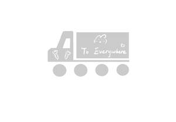

Trade Mark Journal No.2025/041 10 October 2025
UK00004271029 29 September 2025 (6,16,18,21)

- Class 6
- Accordion doors of metal; acoustic panels of metal; adhesive tags of metal for bags; advertisement columns of metal; alloys of common metal; aluminium; aluminium foil; aluminium foil for cooking purposes / aluminum foil for cooking purposes; aluminium wire; anchor plates / tie plates; anchors*; angle irons of metal; anti-friction metal; anvils; anvils [portable]; arbours [structures] of metal; armour-plating of metal / armor-plating of metal; armoured doors of metal / armored doors of metal; aviaries [structures] of metal; badges of metal for vehicles; bag hangers of metal; balls of steel; balustrades of metal; bands of metal for tying-up purposes / wrapping or binding bands of metal; barbed wire; barrel hoops of metal; barrels of metal; bars for metal railings; baskets of metal; bathtub grab bars of metal; beacons of metal, non-luminous; beak-irons / bick-irons; beams of metal / girders of metal; bed casters of metal; bells for animals; bells*; belt stretchers of metal; beryllium [glucinium] / glucinium [beryllium]; bicycle parking installations of metal; binding screws of metal for cables; binding thread of metal for agricultural purposes; bindings of metal; bird baths [structures] of metal; blooms [metallurgy]; bolts of metal; bolts, flat; bottle caps of metal; bottle closures of metal / bottle fasteners of metal; bottles [containers] of metal for compressed gas or liquid air; box fasteners of metal; boxes of common metal; boxes of metal for dispensing paper towels; braces of metal for handling loads / harness of metal for handling loads; brackets of metal for building; brackets of metal for furniture; branching pipes of metal; brass, unwrought or semi-wrought; brazing alloys; bright steel bars; bronze; bronzes [works of art]; bronzes for tombstones / monuments of bronze for tombs; buckles of common metal [hardware]; building materials of metal / construction materials of metal; building materials of metal with soundproofing qualities / construction materials of metal with soundproofing qualities; building panels of metal; buildings of metal; buildings, transportable, of metal; burial vaults of metal; busts of common metal; cabanas of metal; cable joints of metal, non-electric / cable linkages of metal, non-electric; cables of metal, non-electric; cadmium; casement windows of metal; cashboxes [metal or non-metal]; casings of metal for oilwells; cask stands of metal; casks of metal; cast iron, unwrought or semi-wrought; cast steel; cattle chains; ceilings of metal; celtium [hafnium] / hafnium [celtium]; cermets; chains of metal*; check rails of metal for railways / guard rails of metal for railways; chests of metal / bins of metal; chicken-houses of metal; chill-moulds [foundry] / chill-molds [foundry]; chimney cowls of metal; chimney pots of metal; chimney shafts of metal; chimneys of metal; chrome iron; chrome ores; chromium; cladding of metal for building; clips of metal for cables and pipes; clips of metal for sealing bags; closures of metal for containers; clothes hooks of metal; cobalt, raw; collars of metal for fastening pipes; commemorative statuary cups of common metal; common metals, unwrought or semi-wrought; containers of metal [storage, transport]; containers of metal for compressed gas or liquid air; containers of metal for liquid fuel; containers of metal for storing acids; copper rings; copper wire, not insulated; copper, unwrought or semi-wrought; cornices of metal; cotter pins of metal; couplings of metal for chains; covers specially made for handling and transport of metal bottles for compressed gas; crampons [climbing irons]; cramps of metal [crampons] / crampons of metal [cramps]; crash barriers of metal for roads; crucifixes of common metal, other than jewellery / crucifixes of common metal, other than jewelry; dispensers of metal for dog waste bags; diving boards of metal; door bells of metal, non-electric; door bolts of metal; door closers of metal, non-electric / door springs of metal, non-electric; door fasteners of metal; door fittings of metal; door frames of metal / door casings of metal; door handles of metal; door knockers of metal; door openers of metal, non-electric; door panels of metal; door scrapers; door stops of metal; doors of metal*; dowels of metal / pegs [pins] of metal / pins [pegs] of metal; drain pipes of metal; drain traps [valves] of metal; drawn and polished metal bars; duckboards of metal; ducts of metal for ventilating and air-conditioning installations; ducts of metal, for central heating installations / ducts and pipes of metal for central heating installations / pipes of metal, for central heating installations; dustbins of metal, other than for household purposes / garbage cans of metal, other than for household purposes / refuse bins of metal, other than for household purposes / trash cans of metal, other than for household purposes; elbows of metal for pipes; enclosures of metal for tombs; eye bolts / screw rings; fences of metal; ferrules of metal; ferrules of metal for handles; ferrules of metal for walking sticks; figurines of common metal / statuettes of common metal; filings of metal; firedogs [andirons]; fireplace grates of metal; fireplace mantles of metal; fish plates [rails]; fittings of metal for beds; fittings of metal for building; fittings of metal for coffins; fittings of metal for compressed air lines; fittings of metal for furniture; fittings of metal for windows; flagpoles [structures] of metal; flanges of metal [collars]; flashing of metal for building; floating containers of metal; floating docks of metal, for mooring boats; floating floor boards of metal; floor tiles of metal; floors of metal; foils of metal for wrapping and packaging; folding doors of metal; foundry moulds of metal / foundry molds of metal; frames of metal for building; framework of metal for building; furnace fireguards of metal; furniture casters of metal; galena [ore]; gates of metal; germanium; gold solder; gratings of metal / grilles of metal; grave slabs of metal / tomb slabs of metal; grease nipples; greenhouse frames of metal; greenhouses of metal, transportable; gutter pipes of metal; hand-held flagpoles of metal; hand-held supermarket shopping baskets of metal; handcuffs; handling pallets of metal; hinges of metal; hooks [metal hardware]; hooks of metal for clothes rails; hooks of metal for roofing slates; hoppers of metal, non-mechanical; horseshoe nails; horticultural frames of metal / cold frames of metal; hot-rolled steel bars; house numbers of metal, non-luminous; ice moulds of metal; identification bracelets of metal; indium; ingots of common metal; insect screens of metal; iron ores; iron slabs; iron strip / hoop iron; iron wire; iron, unwrought or semi-wrought; ironmongery* / hardware* of metal, small; ironwork for doors; ironwork for windows; jalousies of metal; jerrycans of metal; jets of metal; joists of metal; junctions of metal for pipes; keys of metal; knobs of metal; labels of metal; ladders of metal; latch bars of metal; latches of metal; laths of metal; latticework of metal / trellis of metal; lead seals; lead, unwrought or semi-wrought; letter boxes of metal; letters and numerals of common metal, except type; limonite; linings of metal for building; lintels of metal; loading gauge rods of metal for railway wagons; loading pallets of metal; lock bolts; locks of metal for bags; locks of metal for vehicles; locks of metal, other than electric; machine belt fasteners of metal; magnesium; manganese; manhole covers of metal; manifolds of metal for pipelines; masts of metal; materials of metal for funicular railway permanent ways; memorial plaques of metal; metal cages for wild animals; metal ramps for use with vehicles; metals in foil or powder form for 3D printers; metals in powder form*; mobile boarding stairs of metal for passengers; molybdenum; molybdenum iron; monuments of metal; monuments of metal for tombs; mooring bollards of metal; mooring buoys of metal; mouldings of metal for building / moldings of metal for building; mouldings of metal for cornices / moldings of metal for cornices; mounting frames of metal for solar panels; nails of metal; nameplates of metal / identity plates of metal; nickel; nickel silver / German silver; niobium; nozzles of metal; nuts of metal; oil drainage containers of metal; ores of metal; outdoor blinds of metal; packaging containers of metal; padlocks of metal, other than electronic; paint spraying booths of metal / booths of metal for spraying paint; palings of metal; pantiles of metal; partitions of metal; paving blocks of metal; paving slabs of metal; peeled metal bars; penstock pipes of metal; pigsties of metal; pillars of metal for building; pins [metal hardware]; pipe muffs of metal; pipes of metal / tubes of metal; pipework of metal; pitons of metal; platforms, prefabricated, of metal; plugs of metal / bungs of metal; poles of metal; porches [structures] of metal; posts of metal; posts of metal for power lines / poles of metal for power lines; pot hooks of metal; prefabricated houses [ready-to-assemble] of metal; preserve tins / tin cans; prize cups of common metal; props of metal; pulleys of metal, other than for machines; pyrophoric metals; queue ticket dispensers of metal; rails of metal; railway material of metal; railway points / railway switches; railway sleepers of metal / railroad ties of metal; recycling bins of metal; reels of metal, non-mechanical, for flexible hoses; refractory construction materials of metal; registration plates of metal / numberplates of metal; reinforcing materials of metal for building; reinforcing materials of metal for machine belts; reinforcing materials of metal for pipes; reinforcing materials, of metal, for concrete; rings of metal* / stop collars of metal; rivets of metal; road signs, non-luminous and non-mechanical, of metal; rocket launching platforms of metal; rockfall prevention nets of metal; rods of metal for brazing; rods of metal for brazing and welding; rods of metal for welding; roller blinds of steel; roof coverings of metal; roof flashing of metal; roof gutters of metal; roofing of metal; roofing of metal, incorporating photovoltaic cells; roofing tiles of metal; rope thimbles of metal; ropes of metal; runners of metal for sliding doors; safes [metal or non-metal] / strongboxes [metal or non-metal]; safes, electronic; safety cashboxes; safety chains of metal; sash fasteners of metal for windows; scaffolding of metal; screw tops of metal for bottles; screws of metal; sealing caps of metal; sew-on tags of metal for clothing; sheaf binders of metal; sheet piles of metal / pilings of metal; sheets and plates of metal; shims; shoe dowels of metal; shoe pegs of metal; shuttering of metal for concrete; shutters of metal; signalling panels, non-luminous and non-mechanical, of metal; signboards of metal; signs, non-luminous and non-mechanical, of metal; silicon iron; sills of metal; silos of metal; silver solder; silver-plated tin alloys; skating rinks [structures] of metal; slabs of metal for building; sleeves [metal hardware]; slings of metal for handling loads; soldering wire of metal; soundproof booths, transportable, of metal; split rings of common metal for keys; spring locks; springs [metal hardware]; spurs; stables of metal; stair treads [steps] of metal; staircases of metal; stakes of metal for plants or trees; statues of common metal; steel alloys; steel buildings; steel masts; steel pipes / steel tubes; steel sheets; steel strip / hoop steel; steel wire; steel, unwrought or semi-wrought; step stools of metal; steps [ladders] of metal; stoppers of metal; stops of metal; strap-hinges of metal; straps of metal for handling loads / belts of metal for handling loads; street gutters of metal; stretchers for iron bands [tension links]; stretchers for metal bands [tension links]; stringers [parts of staircases] of metal; swimming pools [structures] of metal; swing doors of metal; tacks of metal / brads of metal; tanks of metal / reservoirs of metal; tantalum [metal]; taps of metal for casks / faucets of metal for casks; telegraph posts of metal; telephone booths of metal / telephone boxes of metal; telpher cables; tension links; tent pegs of metal; thread of metal for tying-up purposes; tile floorings of metal; tiles of metal for building; tin; tinfoil; tinplate; tinplate packings; titanium; titanium iron / ferrotitanium; toilet paper dispensers of metal; tombac; tombs of metal; tombstone plaques of metal; tombstone stelae of metal; tool boxes of metal, empty; tool chests of metal, empty; towel dispensers of metal; transport pallets of metal; traps for wild animals*; trays of metal*; tree protectors of metal; troughs of metal for mixing mortar; tubbing of metal; tungsten; tungsten iron; turnstiles of metal; turntables [railways]; valves of metal, other than parts of machines; vanadium; vats of metal; vice claws of metal; wainscotting of metal; wall claddings of metal for building; wall linings of metal for building; wall plugs of metal; wall tiles of metal; washers of metal; waste dumpsters of metal, other than for medical use; water-pipe valves of metal; water-pipes of metal; weather- or wind-vanes of metal / weather vanes of metal / wind vanes of metal; wheel clamps [boots]; white metal; wind-driven bird-repelling devices made of metal; window casement bolts; window closers of metal, non-electric; window fasteners of metal; window frames of metal; window openers of metal, non-electric; window pulleys of metal / sash pulleys of metal; window stops of metal; window ventlights of metal; windows of metal; wire cloth / wire gauze; wire of common metal; wire of common metal alloys, except fuse wire; wire rope; wire stretchers [tension links]; works of art of common metal; zinc; zip ties of metal / cable ties of metal; zirconium.
- Class 16
- Absorbent sheets of paper or plastic for foodstuff packaging; address plates for addressing machines; address stamps; addressing machines; adhesive tape dispensers [office requisites]; adhesive tapes for stationery or household purposes; adhesives [glues] for stationery or household purposes; advertisement boards of paper or cardboard; albums / scrapbooks; almanacs; animation cels; announcement cards [stationery]; apparatus for mounting photographs; aquarelles / watercolors [paintings] / watercolours [paintings]; architects' models; arithmetical tables / calculating tables; artists' watercolour saucers / artists' watercolor saucers; atlases; baggage claim check tags of paper; bags [envelopes, pouches] of paper or plastics, for packaging; baking paper; balls for ball-point pens; banknotes; banners of paper; barcode ribbons; bibs of paper; bibs, sleeved, of paper; binding strips [bookbinding]; biological samples for use in microscopy [teaching materials]; blackboards; blank punch cards for knitting machines; blotters; blueprints / plans; bookbinding apparatus and machines [office equipment]; bookbinding material; bookends; booklets; bookmarks / bookmarkers; books; bottle envelopes of paper or cardboard; bottle wrappers of paper or cardboard; boxes of paper or cardboard; bunting of paper; calendars; canvas for painting; carbon paper; cardboard tubes; cardboard*; cards* / charts; carrier bags of paper or plastic / shopping bags of paper or plastic; cases for stamps [seals]; catalogues; chalk for lithography; chalk holders; charcoal pencils; chart pointers, non-electronic; chromolithographs [chromos] / chromos; cigar bands; clipboards; clips for name badge holders [office requisites]; clips for offices / staples for offices; cloth for bookbinding / bookbinding cloth; coasters of paper; colouring books / coloring books; colouring pictures / coloring pictures; comic books; compasses for drawing; composing frames [printing]; composing sticks; conical paper bags; copying paper [stationery]; cords for bookbinding / bookbinding cords; correcting fluids [office requisites]; correcting ink [heliography]; correcting tapes [office requisites]; covers [stationery] / wrappers [stationery]; cream containers of paper; credit card imprinters, non-electric; dental tray covers of paper; desk mats; desktop cabinets for stationery [office requisites]; diagrams; document files [stationery]; document holders [stationery]; document laminators for office use; drawer liners of paper, perfumed or not; drawing boards; drawing instruments; drawing materials; drawing pads; drawing pens; drawing pins / thumbtacks; drawing rulers; drawing sets; duplicators; elastic bands for offices; electrocardiograph paper; electrotypes; embroidery designs [patterns]; engraving plates; engravings; envelope sealing machines for offices; envelopes [stationery]; erasers; erasing products; erasing shields; etching needles; etchings; fabrics for bookbinding; face towels of paper; figurines of papier mâché / statuettes of papier mâché; files [office requisites]; filter paper; filtering materials of paper; fingerstalls for office use; flags of paper; flip charts; floor decals; flower-pot covers of paper / covers of paper for flower pots; flyers; folders for papers / jackets for papers; food bags of paper or plastics; forms, printed; fountain pens; franking machines for office use / postage meters for office use; French curves; galley racks [printing]; garbage bags of paper or of plastics; glitter for stationery purposes; glue for stationery or household purposes / pastes for stationery or household purposes; gluten [glue] for stationery or household purposes; graining combs; graphic prints; graphic representations; graphic reproductions; greeting cards; gummed cloth for stationery purposes; gummed tape [stationery]; gums [adhesives] for stationery or household purposes; hand labelling appliances; hand-rests for painters; handkerchiefs of paper; handwriting specimens for copying; hat boxes of cardboard; hectographs; histological sections for teaching purposes; holders for cheque books / holders for checkbooks; holders for stamps [seals]; house painters' rollers; humidity control sheets of paper or plastic for foodstuff packaging; index cards [stationery]; indexes; Indian inks; ink sticks; ink stones [ink reservoirs]; ink*; inking pads; inking ribbons; inking sheets for document reproducing machines; inking sheets for duplicators; inkstands; inkwells; isinglass for stationery or household purposes; labels of paper or cardboard; ledgers [books]; letter trays; lithographic stones; lithographic works of art; lithographs; loose-leaf binders / ring binders; luminous paper; magazines [periodicals]; magnetic boards being office requisites; manifolds [stationery]; manuals [handbooks] / handbooks [manuals]; marking chalk; marking pens [stationery]; mats of paper for beer glasses; mezuzah cases; mezuzah parchments; mimeograph apparatus and machines; modelling clay; modelling materials; modelling paste; modelling wax, not for dental purposes; moisteners [office requisites]; moisteners for gummed surfaces [office requisites]; money clips; moulds for modelling clays [artists' materials] / molds for modelling clays [artists' materials]; musical greeting cards; name badge holders [office requisites]; name badges [office requisites]; newsletters; newspapers; nibs; nibs of gold; note books; numbering apparatus; numbers [type]; obliterating stamps; office perforators; office requisites, except furniture; oleographs; origami folding paper; packaging material made of starches; packing [cushioning, stuffing] materials of paper or cardboard; padding materials of paper or cardboard / stuffing of paper or cardboard; pads [stationery]; page holders; paint boxes for use in schools; paint trays; paintbrushes; painters' brushes; painters' easels; paintings [pictures], framed or unframed; palettes for painters; pamphlets; pantographs [drawing instruments]; paper bags for use in the sterilization of medical instruments / paper bags for use in the sterilisation of medical instruments; paper bows, other than haberdashery or hair decorations; paper clasps; paper coffee filters; paper creasers [office requisites]; paper cutters [office requisites]; paper for medical examination tables; paper for radiograms; paper for recording machines; paper knives [letter openers]; paper party decorations; paper ribbons, other than haberdashery or hair decorations; paper sheets [stationery]; paper shredders for office use; paper wipes for cleaning; paper-clips; paper*; papers for painting and calligraphy; paperweights; papier mâché; parchment paper; passport holders; pastels [crayons]; pen cases / boxes for pens; pen clips; pen wipers; pencil holders; pencil lead holders; pencil leads; pencil sharpeners, electric or non-electric; pencil sharpening machines, electric or non-electric; pencils*; penholders; pens [office requisites]; pens [writing implements] incorporating tips for operating touchscreen devices; perforated cards for Jacquard looms; periodicals; photo-engravings; photographs [printed]; pictures; placards of paper or cardboard; place mats of paper; plantable seed paper [stationery]; plastic bags for pet waste disposal; plastic blister packs for packaging / plastic bubble packs for packaging; plastic bubble film for wrapping; plastic cling film, extensible, for palletization; plastic film for wrapping; plastics for modelling; polymer modelling clay; portraits; postage stamps; postcards; posters; printed coupons; printed geographical maps; printed matter; printed publications; printed sheet music; printed timetables; printers' blankets, not of textile; printers' reglets; printing blocks; printing sets, portable [office requisites]; printing type; prints [engravings]; prospectuses; protective covers for books; punches [office requisites]; retractable reels for name badge holders [office requisites]; rice paper*; rollers for typewriters; school supplies [stationery]; scrapers [erasers] for offices; sealing compounds for stationery purposes; sealing machines for offices; sealing stamps; sealing wafers; sealing wax; seals [stamps]; seaweed-based film for wrapping; self-adhesive tapes for stationery or household purposes; sewing patterns; sheets of reclaimed cellulose for wrapping; shields [paper seals]; signboards of paper or cardboard; slate pencils; song books; souvenir banknotes; spools for inking ribbons; spray chalk; square rulers for drawing; squares for drawing; stamp pads; stamp stands; stamps [seals]; stands for pens and pencils; stapling presses [office requisites]; starch paste [adhesive] for stationery or household purposes; stationery; steatite [tailor's chalk]; steel letters; steel pens; stencil cases; stencil plates; stencils; stencils [stationery]; stencils for decorating food and beverages; stickers [stationery]; T-squares for drawing; table linen of paper; table napkins of paper; table runners of paper; tablecloths of paper; tablemats of paper; tags for index cards; tailors' chalk; teaching materials [except apparatus]; terrestrial globes; tickets; tissue paper; tissues of paper for removing make-up; toilet paper / hygienic paper; towels of paper; tracing cloth; tracing needles for drawing purposes; tracing paper; tracing patterns; trading cards, other than for games; transfers [decalcomanias] / decalcomanias; transparencies [stationery]; trays for sorting and counting money; type [numerals and letters] / letters [type]; typewriter keys; typewriter ribbons; typewriters, electric or non-electric; vignetting apparatus; viscose sheets for wrapping; washi; waxed paper; wood pulp board [stationery]; wood pulp paper; wrapping paper / packing paper; wristbands for the retention of writing instruments; writing board erasers; writing brushes; writing cases [sets]; writing cases [stationery]; writing chalk; writing instruments; writing materials; writing or drawing books; writing paper; writing slates.
- Class 18
- Adhesive tags of leather for bags; animal skins / pelts; attaché cases; backpacks for carrying infants; bags [envelopes, pouches] of leather, for packaging; bags for campers; bags for climbers; bags for sports*; bags*; beach bags; bits for animals [harness]; blinkers [harness] / blinders [harness]; boxes of leather or leatherboard; boxes of vulcanized fibre / boxes of vulcanized fiber; bridles [harness]; bridoons; briefcases; business card cases; butts [parts of hides]; card cases [notecases]; cases of leather or leatherboard; casings, of leather, for springs / casings, of leather, for plate springs; cat o' nine tails; cattle skins; chain mesh purses; chamois leather, other than for cleaning purposes / skins of chamois, other than for cleaning purposes; chin straps, of leather; clothing for pets; collars for animals*; compression cubes adapted for luggage; conference folders / conference portfolios; covers for animals; covers for horse saddles; credit card cases [wallets]; curried skins; dog waste bag dispensers adapted for use with leashes; fastenings for saddles; frames for bags [structural parts of bags]; frames for coin purses [structural parts of coin purses]; frames for umbrellas or parasols; fur / fur-skins; furniture coverings of leather; game bags [hunting accessories]; garment bags for travel; girths of leather; goldbeaters' skin; grips for holding shopping bags; halters / head-stalls; handbags; harness fittings; harness for animals; harness straps / harness traces; hat boxes of leather; haversacks; hiking sticks / trekking sticks; horse blankets; horse collars; horseshoes; imitation leather; key cases; kid; knee-pads for horses; labels of leather; leather cord; leather leashes / leather leads; leather straps / leather thongs; leather, unworked or semi-worked; leatherboard; leathercloth; luggage tags / baggage tags; moleskin [imitation of leather]; motorized suitcases; mountaineering sticks / alpenstocks; music cases; muzzles; mycelium-based imitation leather; net bags for shopping; nose bags [feed bags]; pads for horse saddles; parasols; parts of rubber for stirrups; pocket wallets; pouch baby carriers; purses; randsels [Japanese school satchels]; reins; reins for guiding children; reusable shopping bags; riding saddles; rucksacks / backpacks; saddle trees; saddlebags*; saddlecloths for horses; saddlery; school bags / school satchels; sew-on tags of leather for clothing; shoulder belts [straps] of leather / leather shoulder belts / leather shoulder straps; sling bags for carrying infants; slings for carrying infants; smart suitcases; stirrup leathers; stirrups; straps for skates; straps for soldiers' equipment; straps of leather [saddlery]; suitcase handles; suitcase packing organizers / luggage organizers; suitcases; suitcases with wheels; tefillin [phylacteries]; toilet bags, not fitted; tool bags, empty; traces [harness]; travelling bags; travelling sets [leatherware]; trimmings of leather for furniture / leather trimmings for furniture; trunks [luggage]; umbrella covers; umbrella handles; umbrella or parasol ribs; umbrella rings; umbrella sticks; umbrellas; valises; valves of leather; vanity cases, not fitted; vegan leather; walking stick handles / walking cane handles; walking stick seats; walking sticks* / canes*; wallet chains; wheeled shopping bags; whips.
- Class 21
- Abrasive mitts for scrubbing the skin; abrasive pads for kitchen purposes; abrasive sponges for scrubbing the skin; adhesive refill sheets for rollers for cleaning; adhesive rollers for cleaning; alabaster glass, not for building; animal bristles [brushware]; animal grooming gloves; apparatus for wax-polishing, non-electric; aquarium hoods; aromatic oil diffusers, other than reed diffusers, electric and non-electric; autoclaves, non-electric, for cooking / pressure cookers, non-electric; automatic opening and closing trash cans for household purposes; baby baths, portable; bags for use in cooking; baking cases of paper; baking cases of silicone; baking mats; barbecue forks; barbecue tongs; basins [receptacles]; baskets for household purposes; basting brushes; basting spoons [cooking utensils]; bath sponges; bathroom ladles; beaters, non-electric; beer mugs; beverage urns, non-electric; bird baths*; birdcages; blenders, non-electric, for household purposes; boot jacks; boot trees; bottle openers, electric and non-electric; bottles; bowls [basins] / basins [bowls]; boxes for sweets / candy boxes; boxes of glass; bread baskets for household purposes; bread bins; bread boards; broom handles; brooms; brushes for cleaning tanks and containers; brushes*; buckets / pails; buckets made of woven fabrics; bulb basters; busts of porcelain, ceramic, earthenware, terra-cotta or glass; butter dishes; butter-dish covers; buttonhooks; cabarets [trays]; cages for collecting insects / insect collecting cages; cages for household pets; cake decorating tips and tubes; cake moulds / cake molds; cake stands; candelabra [candlesticks] / candlesticks; candle drip rings / bobeches; candle extinguishers; candle holders*; candle jars [holders]; candle warmers, electric and non-electric; car washing mitts; carpet beaters [hand instruments]; carpet sweepers; cauldrons; ceramics for household purposes; chamber pots; chamois leather for cleaning / buckskin for cleaning / skins of chamois for cleaning; cheese-dish covers; china ornaments; chopsticks; cinder sifters [household utensils]; cleaning instruments, hand-operated; cleaning tow; closures for pot lids; cloth for washing floors; clothes-pegs / clothes-pins; clothing stretchers / stretchers for clothing; cloths for cleaning / rags for cleaning; coasters, not of paper or textile; cocktail shakers; cocktail stirrers; coffee filters, non-electric; coffee grinders, hand-operated; coffee percolators, non-electric; coffee services [tableware]; coffeepots, non-electric; coin banks; cold packs for chilling food and beverages; comb cases; combs for animals; combs*; commemorative statuary cups of porcelain, ceramic, earthenware, terra-cotta or glass; containers for household or kitchen use; cookery moulds / cookery molds; cookie [biscuit] cutters; cookie jars; cooking mesh bags; cooking pots, non-electric; cooking skewers of metal / cooking pins of metal; cooking utensils, non-electric; corkscrews, electric and non-electric; cosmetic apparatus for microdermabrasion; cosmetic spatulas; cosmetic stamps, empty; cosmetic utensils; cotton waste for cleaning; couscous cooking pots, non-electric; covers for tissue boxes; cruet sets for oil and vinegar; cruets; crumb trays; crushers for kitchen use, non-electric; crystal [glassware]; cups; cups of paper or plastic; currycombs; cutting boards for the kitchen; decanter tags; decanters; decorating bags for confectioners / pastry bags / piping bags; decorative glass spheres; deep fryers, non-electric; demijohns / carboys; deodorizing apparatus for personal use / deodorising apparatus for personal use; diaper disposal pails / nappy disposal bins; dish covers / covers for dishes; dish drying racks; dishcloths; dishes; dishwashing brushes; disposable aluminium foil containers for household purposes / disposable aluminum foil containers for household purposes; disposable portable potties for adults and children; disposable table plates; drinking bottles for sports; drinking glasses; drinking horns; drinking troughs; drinking vessels; dripping pans; droppers for cosmetic purposes; droppers for household purposes; dryer balls; drying racks for laundry; dustbins for household purposes / garbage cans for household purposes / refuse bins for household purposes / trash cans for household purposes; dusting apparatus, non-electric; dusting cloths [rags]; dustpans; earthenware / crockery; earthenware saucepans; egg cups; egg poachers; egg separators, non-electric, for household purposes; egg yolk separators; electric brushes, except parts of machines; electric combs; electric devices for attracting and killing insects; electric facial cleansers; electronic pill organizers for personal use; enamelled glass, not for building; epergnes; eyebrow brushes; eyebrow thread; eyelash brushes; eyelash separators; facial cleansing brushes, electric and non-electric; feather-dusters; feeding troughs; fibreglass thread, other than for textile use / fiberglass thread, other than for textile use; fibreglass, other than for insulation or textile use / fiberglass, other than for insulation or textile use; figurines of porcelain, ceramic, earthenware, terra-cotta or glass / statuettes of porcelain, ceramic, earthenware, terra-cotta or glass; figurines of porcelain, ceramic, earthenware, terra-cotta or glass for cakes; fishing nets for aquaria; fitted picnic baskets, including dishes; flasks; floss for dental purposes; flower pots; flower-pot covers, not of paper / covers, not of paper, for flower pots; fly swatters; fly traps; foam toe separators for use in pedicures; food steamers, non-electric; fruit bowls; fruit presses, non-electric, for household purposes; frying pans, non-electric; funnels; furniture dusters; fused silica [semi-worked product], other than for building; gardening gloves; garlic presses [kitchen utensils]; glass bulbs [receptacles] / glass vials [receptacles]; glass flasks [containers]; glass for vehicle windows [semi-finished product]; glass incorporating fine electrical conductors; glass jars [carboys]; glass stoppers; glass wool, other than for insulation; glass, unworked or semi-worked, except building glass; glasses [receptacles]; glove stretchers; gloves for household purposes; glue pots, non-electric; graters for kitchen use; grill supports / gridiron supports; grills [cooking utensils] / griddles [cooking utensils]; hair for brushes; heads for electric toothbrushes; heat-insulated containers; heat-insulated containers for beverages; heaters for feeding bottles, non-electric; heating packs for preparing food and beverages; hip flasks; holders for flowers and plants [flower arranging]; honey dippers; horse brushes; horsehair for brush-making; hot pots, non-electric; ice buckets / coolers [ice pails] / ice pails; ice cream scoops; ice cube moulds / ice cube molds; ice tongs; indoor aquaria / tanks [indoor aquaria]; indoor terrariums [plant cultivation]; indoor terrariums [vivariums]; inflatable bath tubs for babies; insect collectors' boxes; insect traps; insulated lunch bags; insulating flasks / vacuum bottles; ironing board covers, shaped; ironing boards; isothermic bags; jam spoons; jugs / pitchers; kettles, non-electric; kitchen containers; kitchen grinders, non-electric; kitchen utensils; knife rests for the table; ladles for serving wine; lamp-glass brushes; large-toothed combs for the hair; laundry balls, empty / washing balls, empty; lazy susans; lint removers, electric or non-electric; liqueur sets; litter boxes for pets / litter trays for pets; lunch boxes; majolica; make-up brushes; make-up removing appliances; make-up sponges; mangers for animals; material for brush-making; mats, not of paper or textile, for beer glasses; meat grinders, non-electric; menu card holders; mess-tins; mills for household purposes, hand-operated; mixing spoons [kitchen utensils]; mop wringer buckets; mop wringers; mops*; mortars for kitchen use; mosaics of glass, not for building; moulds [kitchen utensils] / molds [kitchen utensils]; mouse traps; mug cosies / mug sleeves; mugs; nail brushes; napkin rings; nest eggs, artificial; noodle machines, hand-operated; nozzles for watering cans / roses for watering cans; nozzles for watering hose; nutcrackers; opal glass; opaline glass; oven mitts / barbecue mitts / kitchen mitts; painted glassware; paper plates; paper towel holders; pasta makers, hand-operated; pastry cutters; pepper mills, hand-operated; pepper pots; perfume burners, electric and non-electric; perfume vaporizers / perfume sprayers; personal hydration packs comprising a fluid reservoir and a delivery tube; pestles for kitchen use; pet feeding bowls; pet feeding bowls, automatic; pet lick mats; pie funnels; pie servers / tart scoops; pig bristles for brush-making; piggy banks; pill organizers for personal use; place mats, not of paper or textile; plate glass [raw material]; plates for diffusing aromatic oil; plates to prevent milk boiling over; plug-in diffusers for mosquito repellents; plungers for clearing blocked drains; polishing apparatus and machines, for household purposes, non-electric; polishing cloths; polishing gloves; polishing leather; polishing materials for making shiny, except preparations, paper and stone; porcelain ware; portable cool boxes, non-electric / portable coolers, non-electric; pot lids; potholders; pots; pottery; potties for children; poultry rings; pouring spouts; powder compacts, empty; powder puffs; powdered glass for decoration; prize cups of porcelain, ceramic, earthenware, terra-cotta or glass; rat traps; refrigerating bottles; reusable ice cubes; reusable silicone food covers; rings for birds; roasting pans / roaster pans / roasting tins; roller tubes for peeling garlic; rolling pins, domestic; rotary washing lines; salad bowls; salad tongs; salt cellars / salt shakers; saucepan scourers of metal; saucers; scoops for household purposes; scouring pads; scrubbing brushes; serving forks; serving ladles; serving spoons; shampoo shields; shaving brush stands / stands for shaving brushes; shaving brushes; shoe brushes; shoe horns; shoe trees; sieves [household utensils]; sifters [household utensils]; signboards of porcelain or glass; simmer rings [cooking utensils]; siphon bottles for carbonated water / siphon bottles for aerated water; ski wax brushes; smart medicine bottles, empty; smoke absorbers for household purposes; soap boxes; soap dispensing bottles; soap holders / dishes for soap; sound wave vibration hairbrushes; soup bowls; soup tureens; spatulas for kitchen use; spice sets; sponge holders; sponges for household purposes; sprinklers*; squeegees [cleaning instruments]; stainless steel soap; stands for clothes irons; stands for portable baby baths; statues of porcelain, ceramic, earthenware, terra-cotta or glass; steel wool for cleaning; stew-pans; sticks for frozen confections; stirring rods for hot bath water; strainers for household purposes; straws for drinking / drinking straws; sugar bowls; sugar tongs; syringes for watering flowers and plants / sprinklers for watering flowers and plants; table napkin holders; table plates; tablemats, not of paper or textile .
TO EVERYWHERE LTD